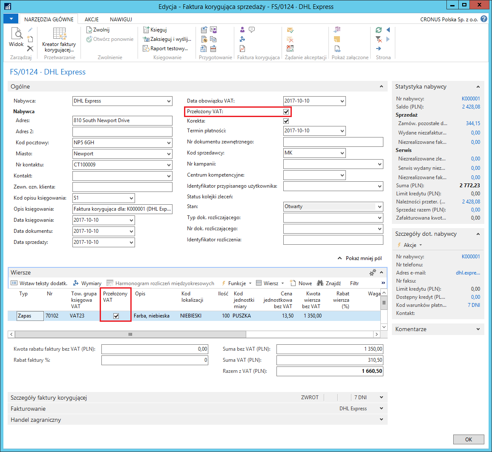
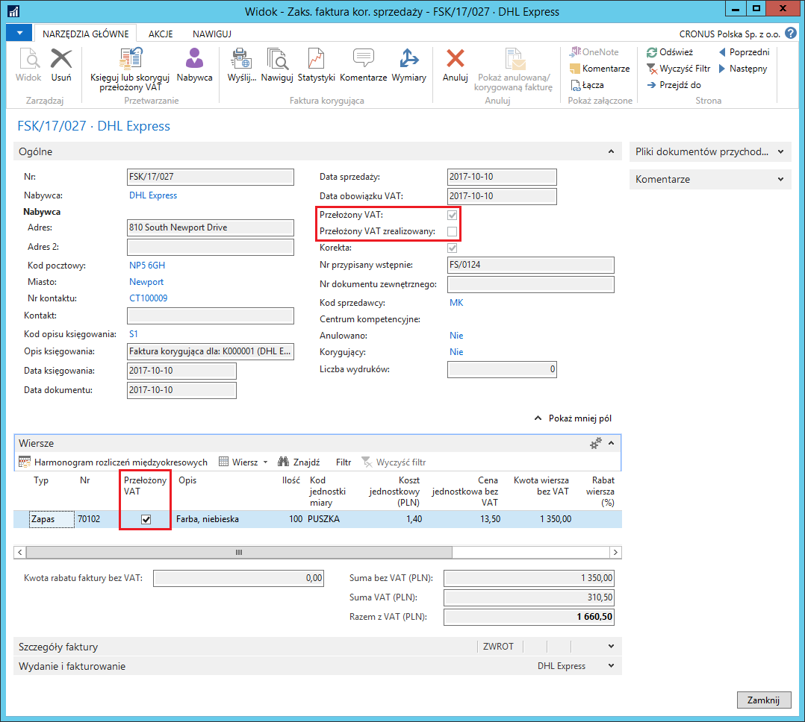
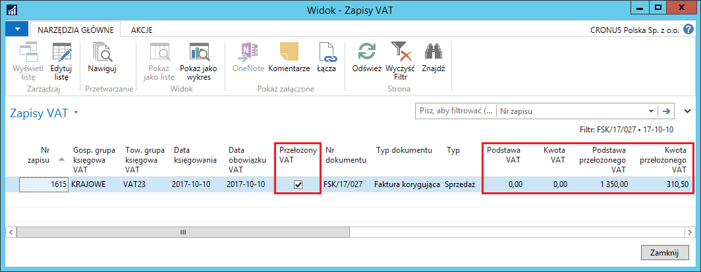
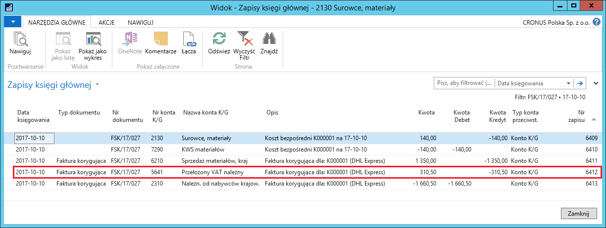
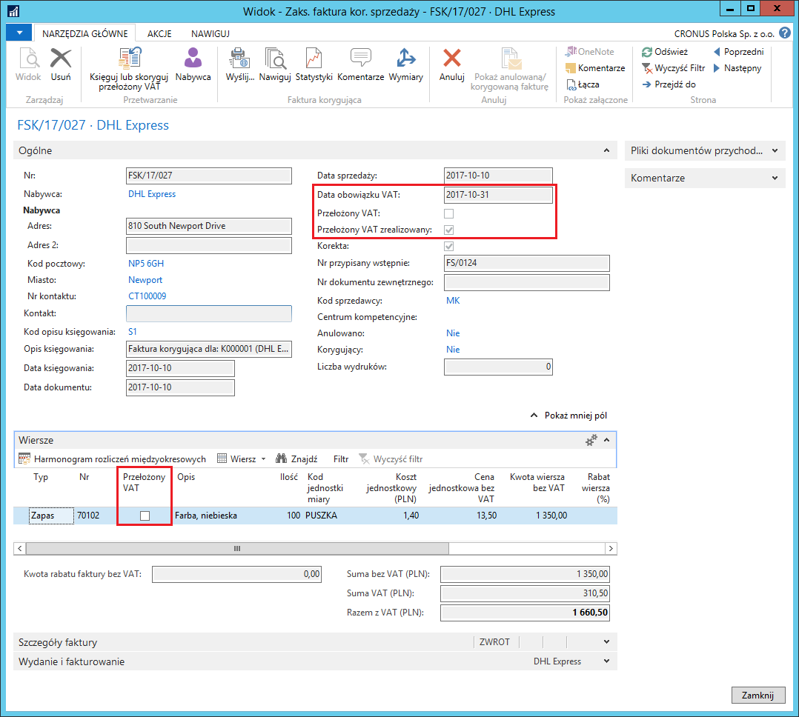
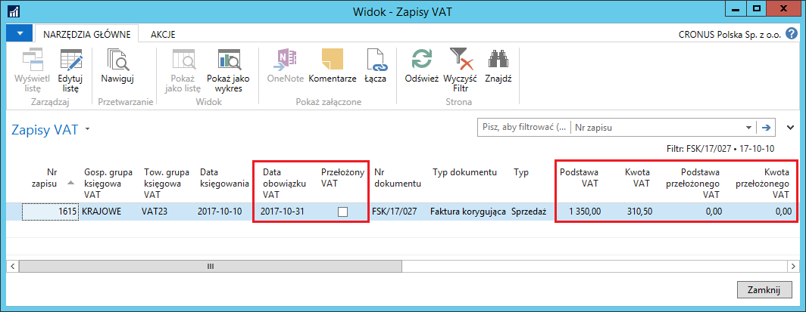
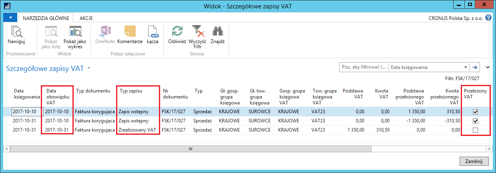
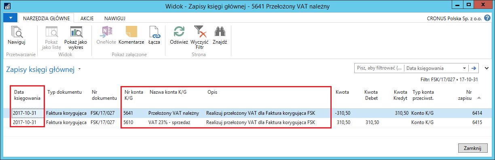
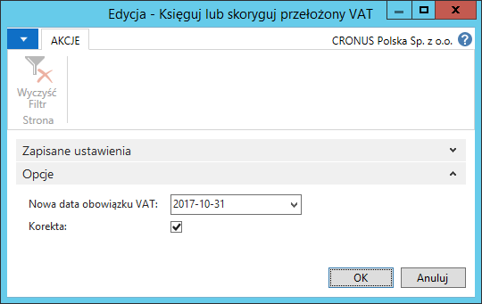

Przełożony VAT (oznaczanie podpisanych faktur korygujących sprzedaży)
Przełożony VAT to funkcjonalność wykorzystywana, gdy kwota podatku VAT musi zostać zawieszona, ze względu na brak możliwości jej rozliczenia w danym momencie.
Przełożony VAT ma szczególne znaczenie w obsłudze faktur korygujących sprzedaży. Zgodnie z przepisami polskiego prawa, podatek VAT z tytułu faktury korygującej sprzedaży może być obniżony dopiero po otrzymaniu potwierdzenia, iż odbiorca otrzymał fakturę korygującą sprzedaży. Stąd wynika potrzeba przełożenia zmniejszenia kwoty podatku VAT na okres pomiędzy wystawieniem faktury korygującej sprzedaży a otrzymaniem potwierdzenia.
Funkcjonalność Przełożonego VAT zostanie opisana na przykładzie faktur korygujących sprzedaży, ale może być wykorzystana w następujących dokumentach: Zamówienie zakupu, Faktura zakupu, Zamówienie zwrotu zakupu, Faktura korygująca zakupu, Zamówienie sprzedaży, Faktura sprzedaży, Zamówienie zwrotu sprzedaży, Faktura korygująca sprzedaży. Pole Przełożony VAT można też edytować w wierszach dzienników głównych oraz w oknie VAT-dodatkowe informacje. Po zaksięgowaniu transakcji z VAT, informacja o przełożonym podatku VAT zapisywana jest w zaksięgowanych dokumentach: Zaksięgowana faktura zakupu, Zaksięgowana faktura korygująca zakupu, Zaksięgowana faktura sprzedaży, Zaksięgowana faktura korygująca sprzedaży. Przełożony VAT zapamiętany jest również w tabelach: Zapis VAT oraz Szczegółowy zapis VAT.
Uwaga
Pole Przełożony VAT może być automatycznie zaznaczane w dokumentach Faktura korygująca sprzedaży i Zamówienie zwrotu sprzedaż, jeśli pole Potwierdzenie faktury korygującej w oknie Ustawienia sprzedaży i należn. jest zaznaczone, w przeciwnym wypadku, pole Przełożony VAT, w razie potrzeby, musi być zaznaczane ręcznie w ww. dokumentach.
W pozostałych dokumentach pole Przełożony VAT musi być zawsze zaznaczane ręcznie, jeśli użycie przełożonego VAT jest wymagane.
Warunkiem do rozpoczęcia korzystania z funkcjonalności Przełożony VAT jest zdefiniowanie właściwych ustawień, opisanych na początku tego rozdziału.
W celu wystawienia faktury korygującej sprzedaży, należy postępować według następujących kroków:
Należy wybrać Działy > Zarządzanie Finansami > Należności > Faktury korygujące sprzedaży.
W oknie, które się otworzy, należy wybrać Nowe i standardowo wprowadzić dane faktury korygującej sprzedaży.
Na karcie skróconej Ogólne, należy zwrócić uwagę na pole Przełożony VAT – powinno przyjąć wartość zgodną z wcześniej zdefiniowanymi ustawieniami.
Na karcie skróconej Wiersze, należy zwrócić uwagę, że Przełożony VAT – przyjęło wartość taką samą, jak w polu Przełożony VAT na karcie skróconej Ogólne.

Uwaga
Jeśli podatek VAT z faktury korygującej sprzedaży powinien być zaksięgowany i rozliczony jak zwykły (nie przełożony), należy zdjąć znacznik z pola Przełożony VAT na karcie skróconej Ogólne – system zaktualizuje tę informację we wszystkich wierszach dokumentu.
Należy zaksięgować fakturę korygującą sprzedaży.
Należy sprawdzić pole Przełożony VAT w zaksięgowanej fakturze korygującej sprzedaży. W tym celu należy wybrać Działy > Zarządzanie Finansami > Archiwum > Zaks. faktury koryg. sprzed..
Wybraną zaksięgowaną fakturę korygującą sprzedaży należy wyświetlić w formie kartoteki:

Można też sprawdzić, jak przełożony VAT został zapisany w oknie Zapisy VAT. W tym celu, w zaksięgowanej fakturze zakupu należy wybrać Nawiguj, następnie należy zaznaczyć wiersz Zapis VAT i wybrać Pokaż powiązane zapisy:

Na uwagę zasługują też zapisy utworzone w oknie Zapisy księgi głównej. Kwota przełożonego należnego podatku VAT została zaksięgowana na inne konto KG niż zwykły należny podatek VAT (zgodnie z wcześniej zdefiniowanymi ustawieniami). W celu sprawdzenia zapisów księgi głównej, w zaksięgowanej fakturze zakupu należy wybrać Nawiguj, następnie należy zaznaczyć wiersz Zapis K/G i wybrać Pokaż powiązane zapisy:

Po otrzymaniu od odbiorcy potwierdzenia faktury korygującej sprzedaży, należy postępować według następujących kroków:
Należy wybrać Działy > Zarządzanie Finansami > Archiwum > Zaks. faktury koryg. sprzed.
Wybraną zaksięgowaną fakturę korygującą sprzedaży należy wyświetlić w formie kartoteki i wybrać Księguj lub skoryguj przełożony VAT.
W oknie Księguj lub skoryguj przełożony VAT należy uzupełnić pola:
Nowa data obowiązku VAT – w polu należy wpisać datę, z jaką ma być rozliczony podatek VAT z podpisanej faktury korygującej sprzedaży.
Korekta – pole należy pozostawić puste.
Należy wybrać OK w celu wykonania skryptu.
Efekty czynności wykonanej w poprzednim punkcie można zobaczyć:
- W kartotece zaksięgowanej faktury korygującej sprzedaży:

- W oknie Zapisy VAT:

- W oknie Szczegółowe zapisy VAT:

- W oknie Zapisy księgi głównej:

W sytuacji, gdy przełożony podatek VAT z faktury korygującej sprzedaży został zrealizowany przez pomyłkę, można ten proces odwrócić, postępując według kroków:
W kartotece zaksięgowanej faktury korygującej sprzedaży, z której przez pomyłkę został zrealizowany przełożony VAT, należy wybrać Księguj lub koryguj przełożony VAT.
W oknie Księguj lub koryguj przełożony VAT należy uzupełnić pola:
Nowa data obowiązku VAT – w polu należy wpisać datę, z jaką przełożony podatek VAT został pomyłkowo zrealizowany (jest to data aktualnie wyświetlona w polu Data obowiązku VAT na karcie skróconej Ogólne w zaksięgowanej fakturze korygującej sprzedaży).
Korekta – pole należy zaznaczyć.

Należy wybrać OK w celu wykonania skryptu.
Rezultatem powyższego księgowania będzie odwrócenie realizacji
przełożonego VAT z tą samą datą księgowania, z jaką zostało dokonane
pomyłkowe księgowanie. Dzięki temu, raporty nie będą wykazywały
rozbieżności w danych. Teraz zaksięgowana faktura korygująca sprzedaży
ponownie została oznaczona jako **Przełożony VAT i **będzie można
ponownie uruchomić skrypt do realizacji przełożonego VAT:
Uwaga
Pole Przełożony VAT musi mieć taką samą wartość (zaznaczenie) w nagłówku oraz wszystkich wierszach faktury korygującej sprzedaży oraz zamówienia zwrotu sprzedaży. W pozostałych dokumentach, w których pole Przełożony VAT jest obsługiwane, jego zaznaczenie może być różne w nagłówku i wierszach (na wzór wartości pola Data obowiązku VAT).
Sposób, w jaki należy realizować przełożony VAT z dokumentów innych niż zaksięgowana faktura korygująca sprzedaży, opisany jest w rozdziale Arkusz rozliczania VAT.